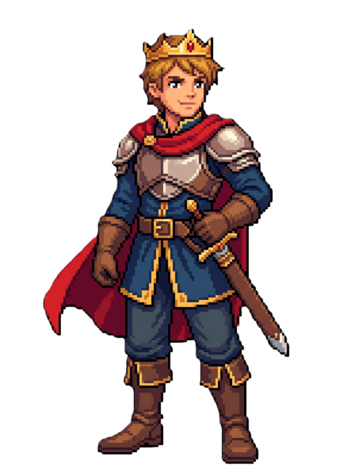
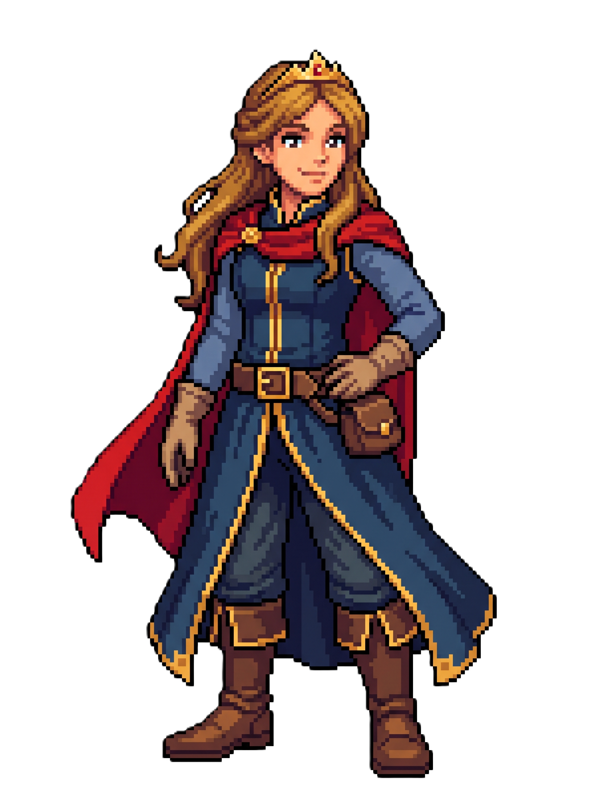
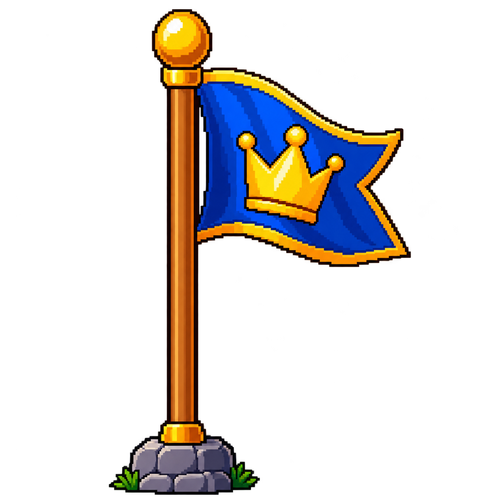

Carregando tutorial...

Você perdeu todas as vidas!
O Príncipe atravessou todas as 10 pontes e salvou a Princesa!
Ponte das Frações - desenvolvido por:
José Thiago Gomes da Silva
no contexto da disciplina de Pensamento Computacional do curso de Licenciatura em Computação na UAEADTEC/UFRPE polo Surubim.